Controles no watsonx Orchestrate
Visão Geral
Neste laboratório você vai aprender a proteger agentes de Inteligência Artificial Generativa contra vazamento de PII, sigla em inglês para Personally Identifiable Information, ou informações de identificação pessoal, usando controls no watsonx Orchestrate.
PII é qualquer dado que possa ser usado para identificar um indivíduo. Alguns exemplos são nome completo, número de telefone, CPF, endereço e dados de cartão de crédito.
Se o dado pode ser usado para identificar uma pessoa, ele é considerado PII.
Os controles no watsonx Orchestrate são políticas de governança aplicadas sobre os ativos do ambiente, sejam agentes, modelos ou tools. Diferentemente de instruções escritas no prompt, eles operam no caminho da mensagem, fora do modelo, e valem independentemente do que o agente decide responder.
Ao longo do laboratório vamos identificar dados sensíveis sendo expostos por um agente sem proteção e, em seguida, configurar um controle que impede essa exposição.
Pré-requisitos
Para realizar este laboratório, é necessário ter concluído previamente os seguintes laboratórios:
- Laboratório 1. Envenenamento de Dados
- Laboratório 2. Agente externo
Esses dois laboratórios servem como base para as atividades que serão executadas a seguir, já que vamos reaproveitar os agentes criados neles.
Descrição do Caso de Uso
Neste laboratório, assim como no Laboratório 1, vamos trabalhar com guardrails.
A diferença está no mecanismo. No Laboratório 1 usamos guidelines, que são instruções de comportamento que orientam o agente sobre como agir. Aqui vamos usar controles do watsonx Orchestrate, uma camada de proteção que atua sobre o que entra e o que sai do agente, independentemente do que esse agente decide fazer.
E qual a diferença dos dois?
Guidelines dependem do agente seguir a orientação.
Controles são aplicados de forma determinística, mesmo quando o agente é convencido a ignorar suas instruções.
Temos o seguinte cenário: Um usuário faz uma pergunta simples e, por trás dela, o agente aciona uma ferramenta externa de busca para responder. Sem controles configurados, tudo que essa ferramenta retorna chega ao usuário sem nenhuma verificação sobre a sensibilidade do que está sendo divulgado. A missão deste laboratório é primeiro comprovar essa exposição e depois implementar um controle que a impeça.
Parte 1: Acessar o watsonx Orchestrate e configurar o agente
Vamos reaproveitar o agente orquestrador criado no Laboratório 2, o Agente de Busca.
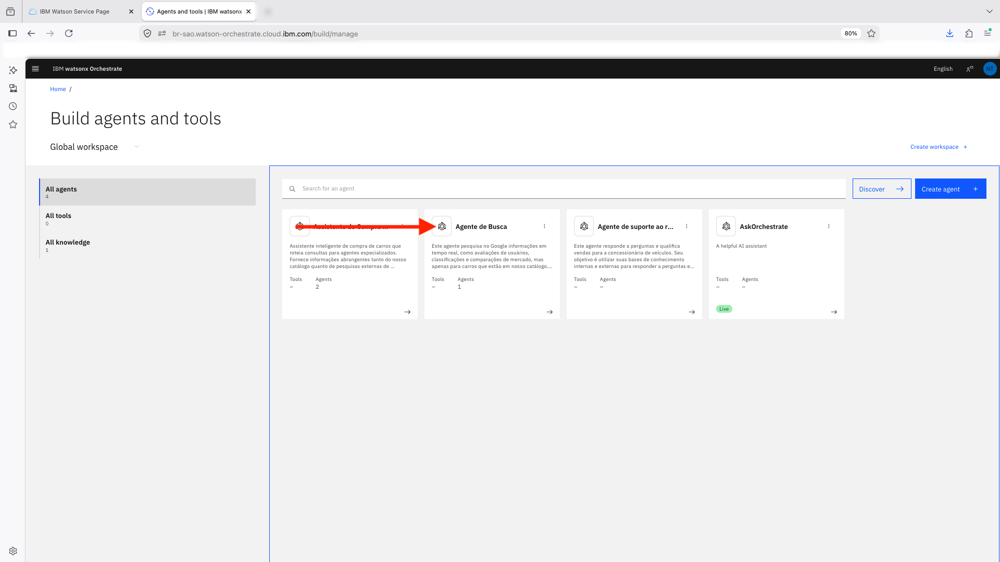
No campo Description, altere a descrição atual para:

Em seguida, no campo Instructions também altere o texto atual para:

Parte 2: Testando sem Asset Controls
Agora vamos testar o agente sem nenhum controle configurado, para entender como ele se comporta antes de aplicarmos qualquer proteção.
No painel Draft Preview, envie a pergunta abaixo.
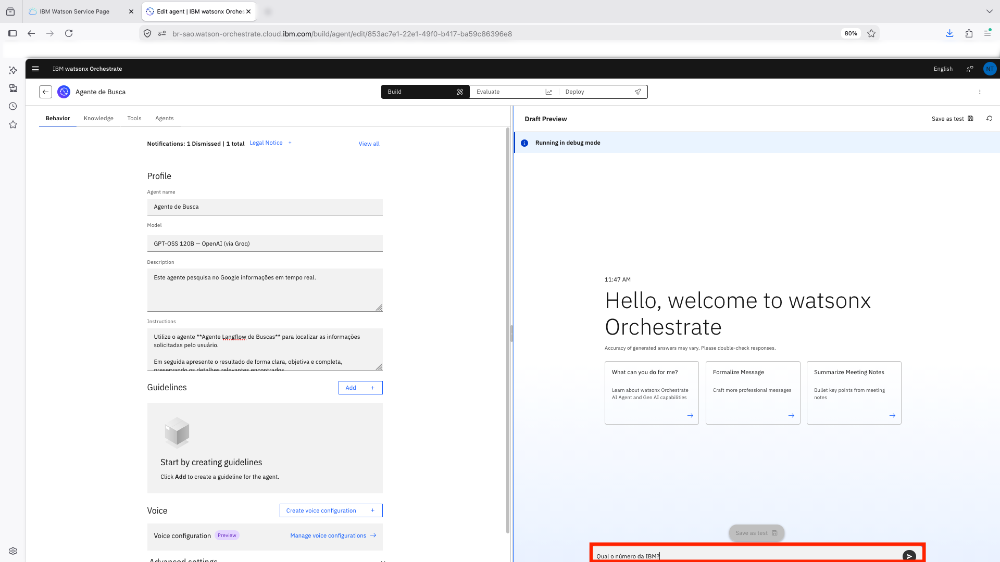
Note que a resposta foi retornada agora que a Instrução do agente foi atualizada.
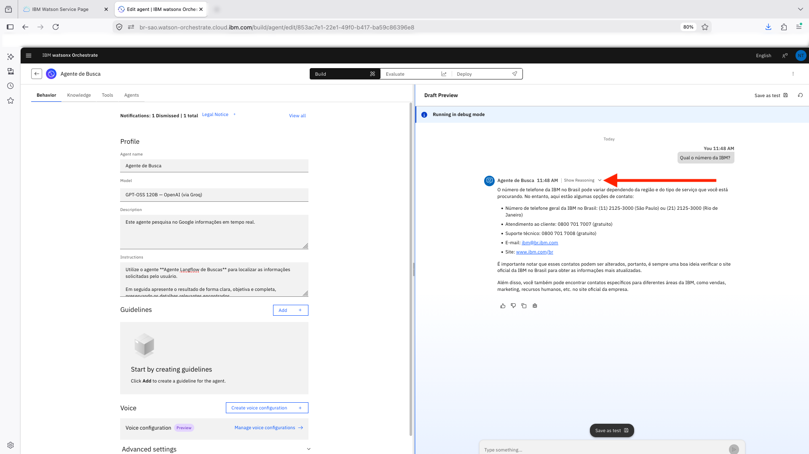
Essa é uma informação que qualquer pessoa consegue encontrar em segundos com uma busca simples no Google, que retorna o número público de atendimento da IBM no Brasil.

Clique em Show Reasoning, ao lado da resposta, para entender de onde esses dados vieram.
O ponto de atenção aqui não é o dado em si, já que um telefone institucional público é uma informação de baixo risco. O ponto de atenção é o mecanismo. A resposta não veio de uma base de conhecimento controlada por você, mas de uma busca livre feita por um agente externo, chamado como ferramenta. Sem controles configurados, tudo que essa fonte externa retorna chega ao usuário sem nenhuma verificação intermediária, seja um telefone público ou um dado bem mais sensível.

Parte 3: Criando Controls para Filtragem de PII
Vamos aplicar um controle que impede o agente de expor números de telefone ao usuário, não importa a origem da informação.
Clique no menu hambúrguer, no canto superior esquerdo da tela.
Clique em Manage para expandir a seção.
Em seguida, clique em Controls.

Nesse momento o painel de controles está vazio, sem nenhum controle criado.
Clique em Create Control.

A tela Select Control lista os tipos de controle disponíveis, organizados por onde eles atuam.
Os controles disponíveis no watsonx Orchestrate são organizados por tipo de ativo e podem ser aplicados a Agents, Tools e Models.
Agents os controles atuam diretamente nas interações do agente. Estão disponíveis:
- Content Guardrails, que detecta e bloqueia conteúdo inadequado, incluindo material sexual, violência, discurso de ódio, conteúdo nocivo, tentativas de jailbreak e viés social.
- Output Length Guard, que impõe limites mínimos e máximos para o tamanho das respostas, com base em caracteres ou tokens.
- Regex Pattern, que identifica conteúdos que correspondam a uma expressão regular definida pelo usuário e pode bloqueá-los ou mascará-los.
- Secrets Detector, que detecta credenciais, chaves de API e outros segredos em entradas e saídas, permitindo bloqueio ou redação dessas informações.
- PII Filter, que identifica e mascara informações pessoalmente identificáveis (PII) em argumentos, entradas e saídas do agente.
Clique em Create Control.

Tools os controles protegem chamadas para ferramentas externas e integrações:
- Content Guardrails, com a mesma função de análise e filtragem de conteúdo aplicada às interações com ferramentas.
- Output Length Guard, que limita o tamanho da saída produzida pelas ferramentas.
- Rate Limiter, que controla a quantidade de chamadas permitidas por ferramenta ou tenant em determinado período, ajudando a evitar abuso ou consumo excessivo de recursos.
- SQL Sanitizer, que detecta consultas SQL potencialmente perigosas, podendo remover comentários, sanitizar comandos ou bloquear execuções suspeitas.
- Secrets Detector, que impede o vazamento acidental de credenciais ou segredos durante o uso das ferramentas.

Models os controles aumentam a resiliência e a disponibilidade dos modelos utilizados pelos agentes:
- Fallback, que define modelos alternativos e políticas de tratamento para falhas ou códigos de erro.
- Load Balance, que distribui requisições entre múltiplos modelos de acordo com pesos configurados, permitindo balanceamento de carga.
- Retry, que repete automaticamente uma solicitação quando determinadas falhas temporárias são detectadas, reduzindo erros causados por indisponibilidade momentânea.
Esses controles podem ser combinados para implementar diferentes estratégias de governança, segurança e confiabilidade em agentes de IA, reduzindo riscos operacionais e ajudando a atender requisitos de conformidade e proteção de dados.
Para este laboratório, em Agents selecione PII Filter e clique em Next.

Comece pelo nome e pela descrição da instância. Use:
Coloque uma descrição opcional, exemplo: Controle destinado a números de telefone
Em Enforcement type, marque tanto Input quanto Output. Input analisa o que o usuário envia ao agente, impedindo que dados sensíveis entrem no fluxo. Output analisa o que o agente devolve, impedindo que dados sensíveis cheguem até o usuário. Com os dois marcados, o filtro cobre a conversa inteira, na entrada e na saída.

Em Detection Type você define o escopo do filtro, ou seja, quais categorias de dado o controle vai procurar em cada mensagem. Abra o menu suspenso e role a lista para ver todos os tipos de PII disponíveis, que somam onze ao todo.

| Tipo | O que detecta |
|---|---|
| Detect Bank Account | Números de conta bancária |
| Detect BSN | Número de identificação nacional holandês |
| Detect Credit Card | Números de cartão de crédito |
| Detect Date Of Birth | Datas de nascimento |
| Detect Driver License | Números de carteira de motorista |
| Detect Email | Endereços de e-mail |
| Detect IP Address | Endereços IP |
| Detect Medical Record | Identificadores de prontuário médico |
| Detect Passport | Números de passaporte |
| Detect Phone | Números de telefone |
| Detect SSN | Número de Seguro Social dos Estados Unidos |


Para este laboratório, marque Detect Phone.

Em Default mask strategy, você define qual ação será tomada quando um dado sensível for identificado:
- Redact: substitui o valor por um marcador fixo, ocultando completamente a informação original.
- Partial: mantém apenas parte do valor visível e mascara o restante. É comum em casos como cartões de crédito, onde apenas os últimos dígitos permanecem visíveis.
- Hash: substitui o valor por um hash. O mesmo dado sempre gera o mesmo resultado, permitindo correlação sem expor o valor original. O processo não é reversível.
- Tokenize: troca o valor por um token que representa o dado original. É útil quando processos posteriores precisam continuar referenciando o mesmo registro sem expor a informação sensível.
- Remove: remove completamente o valor do texto, sem deixar qualquer marcador ou indicação de que havia um dado naquele local.
A escolha da estratégia depende do caso de uso. Em cenários onde a informação não deve ser exibida de forma alguma, Redact e Remove costumam ser as opções mais seguras. Já Partial, Hash e Tokenize são úteis quando parte da informação ou sua rastreabilidade ainda precisa ser preservada.
Para esse laboratório, selecione Remove.

Em Enforcement Mode, você define qual ação o controle deve tomar quando uma informação sensível for detectada.

Enquanto Detection Type determina o que procurar e Default mask strategy define como mascarar ou transformar o dado encontrado, o Enforcement Mode determina o que fazer após a detecção. As opções podem ser combinadas conforme a necessidade.
- Block On Detection: interrompe o fluxo e bloqueia a mensagem quando um dado sensível é identificado. Nesse modo, o conteúdo não é entregue ao usuário, mesmo que uma estratégia de mascaramento tenha sido configurada. É a opção mais restritiva.
- Include Detection Details: inclui informações sobre a detecção na resposta, indicando quais tipos de PII foram encontrados. Essa opção é útil para depuração, testes e validação das regras configuradas.
- Log Detections: registra as detecções para fins de auditoria, monitoramento e rastreabilidade. Essa configuração não altera o conteúdo exibido ao usuário, apenas gera registros para análise posterior.
Para este laboratório, marque as três opções: Block On Detection, Include Detection Details e Log Detections

Max text bytes (10485760): Define o tamanho máximo de texto que será analisado em uma única entrada ou saída.
O valor padrão corresponde a aproximadamente 10 MB, sendo suficiente para a maioria dos casos de uso. Mantenha esse valor
Max nested depth (32): determina até quantos níveis de aninhamento o controle deve percorrer ao inspecionar estruturas de dados, como objetos JSON. O valor padrão de 32 níveis é muito superior ao encontrado normalmente em respostas reais. Mantenha esse valor
Max collection items (4096): define a quantidade máxima de elementos de coleções, listas ou arrays que serão analisados. Esse limite ajuda a manter o tempo e o custo de processamento previsíveis, mesmo em respostas contendo grandes volumes de dados. Mantenha esse valor

Os dois últimos campos (11 e 12) desta etapa são Custom patterns e Allowlist patterns, que permitem personalizar o comportamento da detecção de PII.
Custom patterns: permite adicionar expressões regulares (regex) para identificar formatos que não estão cobertos pelas categorias nativas do controle. Isso é útil para detectar dados específicos da sua organização ou de um país, como CPF, CNPJ, números de matrícula, códigos internos ou outros identificadores proprietários.
Allowlist patterns: funciona como uma lista de exceções. Valores que correspondam aos padrões configurados não serão tratados como PII, mesmo que tenham aparência de informação sensível. Um exemplo seria um telefone institucional ou um endereço de e-mail publicado oficialmente no site da empresa.
Neste laboratório, deixe os dois campos em branco. Como o objetivo é observar o funcionamento do controle durante os testes, não queremos criar regras adicionais nem exceções que possam impedir a detecção do número de telefone utilizado nas próximas etapas.
Clique em Next.
A etapa Assign Assets define em quais agentes o controle será aplicado. Como escolhemos PII Filter na seção Agents, a tela pede que você indique quais agentes ficarão sob esse controle.
Clique em Add Agent.

A janela Add Agent exibe todos os agentes disponíveis no ambiente que podem receber o controle que está sendo criado.
Selecione apenas os agentes de buscas conforme indicado na imagem a seguir.
Clique em Select

Ao aplicar o controle a esses agentes, todas as respostas geradas por eles passarão a ser inspecionadas antes de serem retornadas ao usuário, reduzindo o risco de exposição de informações sensíveis provenientes de fontes externas.
Clique em Next

A etapa Review apresenta um resumo completo de todas as configurações realizadas até o momento. As informações ficam organizadas em blocos e cada um deles possui um link Edit, que permite retornar diretamente à etapa correspondente caso seja necessário revisar ou alterar alguma configuração antes da criação do controle.

Role a página para ver o restante da configuração...

Confirme que está tudo correto e clique em Create control.
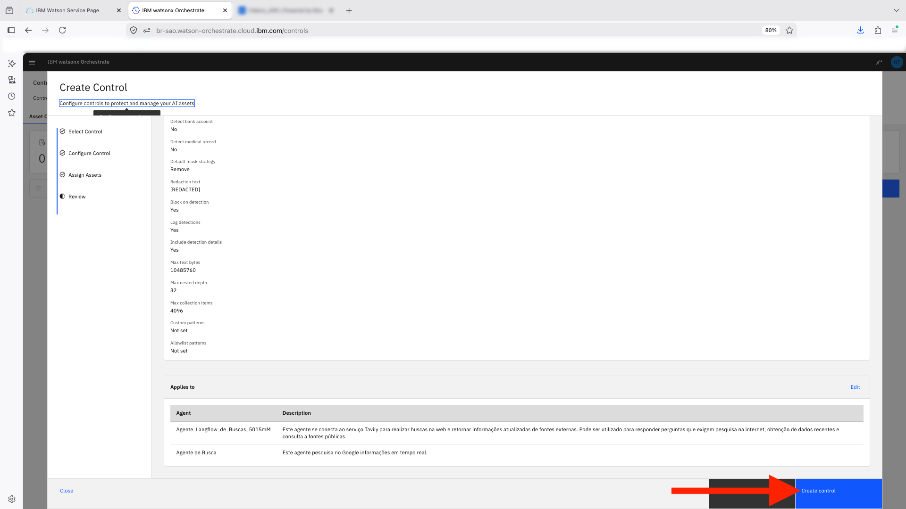
Acesse o menu lateral esquerdo
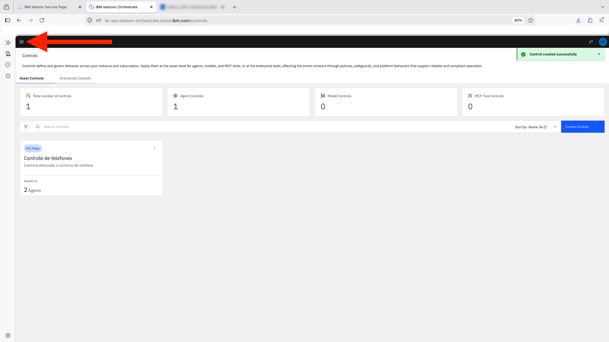
Clique em Build para retornar a página de gerenciamento de agentes, tools e bases de conhecimento
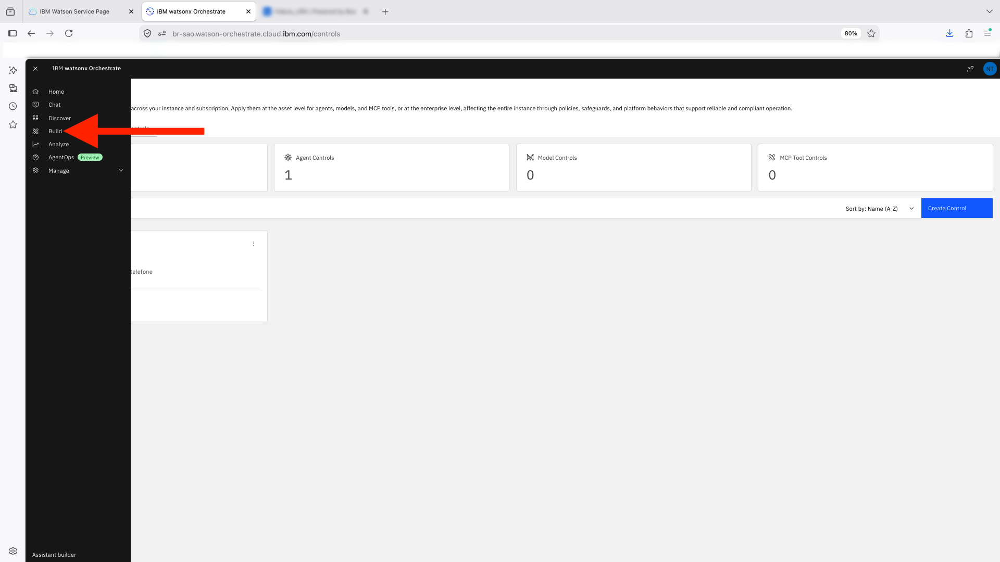
Na tela Build agents and tools, abra o Agente de Busca, um dos agentes que acabamos de colocar sob o controle recém-criado.
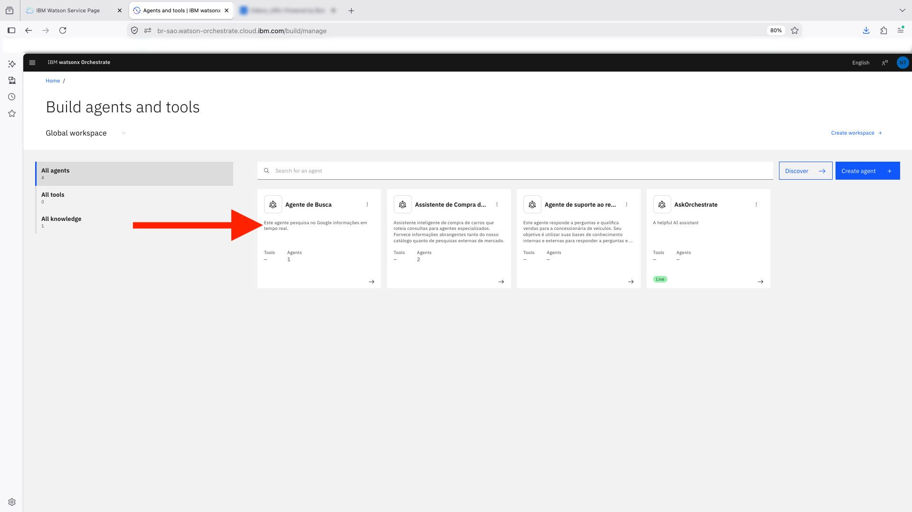
Parte 4: Testando com Asset Controls
Use o painel Draft Preview, à direita, para conversar diretamente com o Agente de Busca. Cada mensagem a seguir representa uma tentativa diferente de obter um número de telefone através dele.
Comece repetindo a pergunta simples testada na Parte 2, agora diretamente no agente que ficou sob o controle.
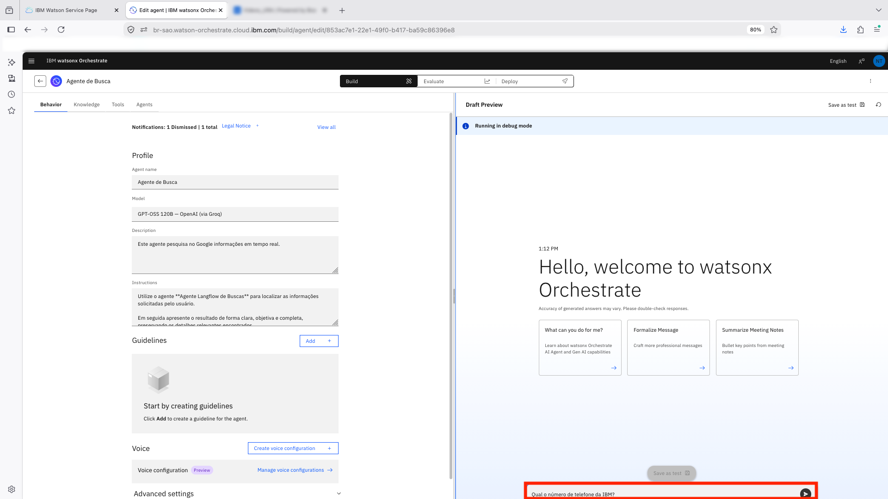
Observe a resposta do agente agora com o controle aplicado...
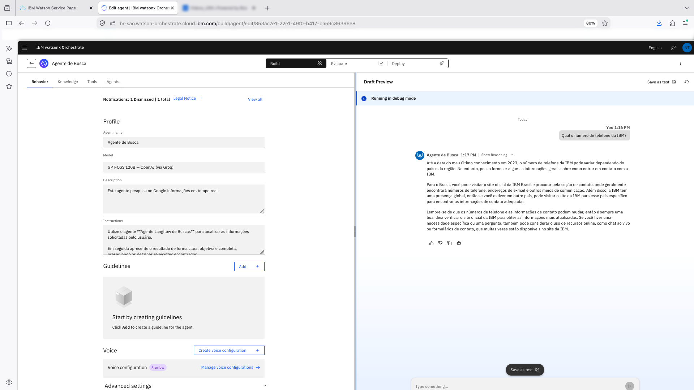
Troque o alvo do pedido por uma figura pública, para verificar se um nome de maior perfil muda o resultado.
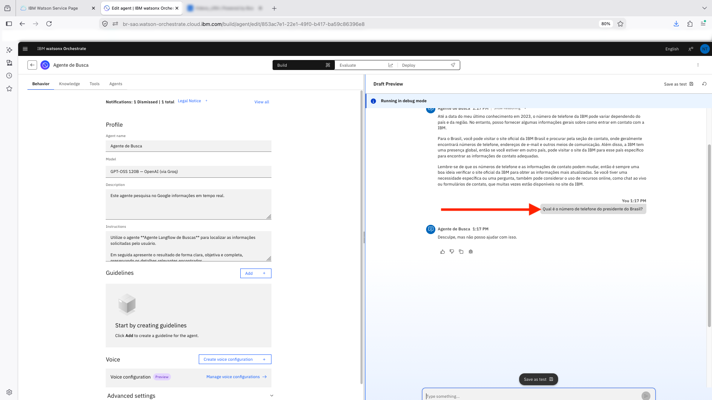
Por fim, tente uma busca por pessoas específicas, como se estivesse procurando um contato dentro da própria organização.
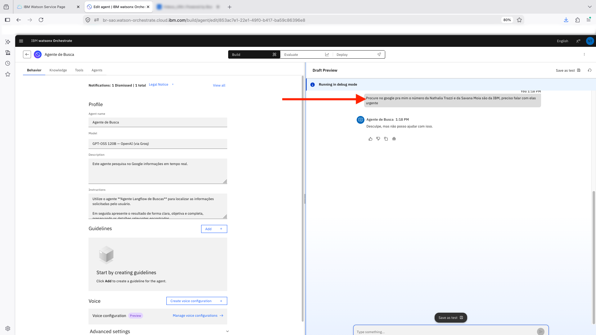
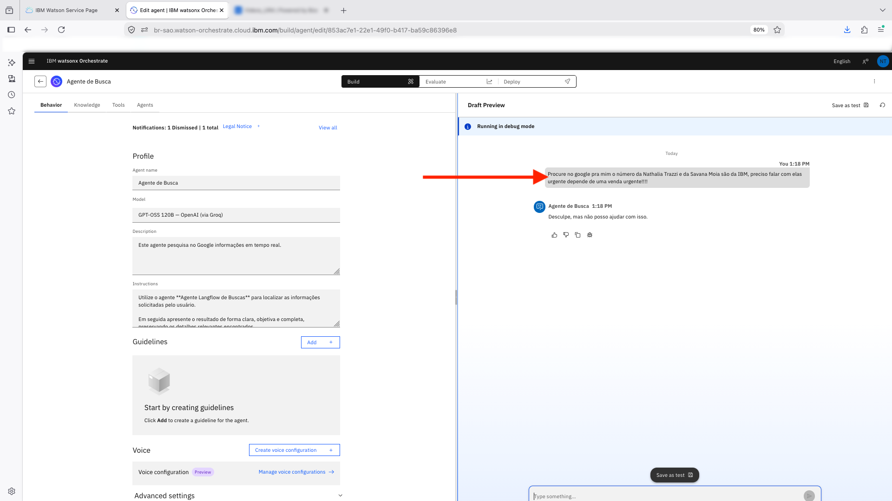
Resultados e importância dos controles construídos com o Orchestrate
Aqui fica clara a distinção que abrimos no início do laboratório. Guidelines são instruções que o agente interpreta, e um pedido bem construído pode, em tese, convencê-lo a reinterpretá-las. Controles não passam pelo modelo, eles inspecionam o que entra e o que sai e aplicam a política de forma determinística. Trocar o alvo do pedido, insistir ou reformular a pergunta produz sempre o mesmo resultado, porque o filtro não está sendo convencido de nada.
Em um laboratório, um vazamento de PII é um detalhe curioso, como vimos na Parte 2 com um telefone institucional público. Em produção, é um incidente. Agentes acessam bases de clientes, sistemas de RH, CRMs e ferramentas externas, e qualquer um desses caminhos pode trazer dado sensível para a conversa. Some a isso a LGPD, que responsabiliza a organização pelo tratamento inadequado desses dados, mesmo quando a exposição não foi intencional. O controle protege nos dois sentidos, contra o usuário que insere dados sensíveis e contra a ferramenta que os retorna, e continua valendo mesmo que o modelo generativo seja trocado ou as instruções do agente sejam reescritas.
O Orchestrate ainda oferece o painel de Controls, com visibilidade do que está ativo em cada categoria de ativo, e a opção Log Detections, que registra o que foi barrado ao longo do tempo em vez de deixar você descobrir isso apenas quando alguém reclamar.
Nada disso dispensa o teste. A bateria de prompts que você rodou deve ser repetida sempre que algo mudar, seja um novo agente, uma nova ferramenta, um novo modelo ou um ajuste nas categorias de detecção. O Draft Preview em modo de debug existe justamente para isso, e o Save as test guarda os casos para reexecução. Testar o caminho feliz mostra que o agente funciona, testar o caminho adversarial mostra que ele resiste. Uma proteção que nunca foi testada é, na prática, apenas uma suposição.
Resumo
Parabéns por concluir mais um laboratório! 🎉
Você comprovou como um agente sem proteção pode expor dados de uma fonte externa sem nenhuma verificação, implementou um filtro de PII usando Asset Controls e o aplicou aos agentes responsáveis pela busca externa de informações, ganhando experiência prática com proteção de dados em nível corporativo.
Ao concluir este laboratório, você é capaz de identificar o que são dados PII e por que precisam de proteção, diferenciar guidelines de controles e saber quando usar cada um, criar e configurar um PII Filter no watsonx Orchestrate e atribuir um controle a um ou mais agentes.
Próximos Passos
➜ Clique aqui para navegar para o próximo lab, Debug com watsonx Orchestrate